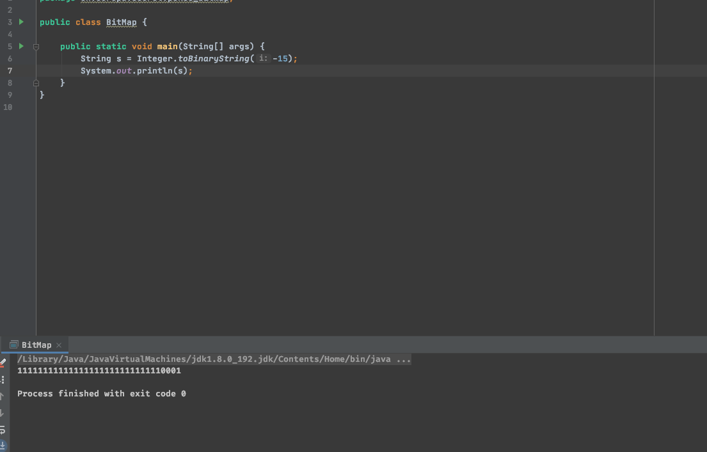

字节相关
1. 原码、反码、补码。
- 最高位为符号位 正数为0 负数为1
如 10原码为 0000 1010 -10原码为 1000 1010
- 正数的原码、反码、补码都一样，负数的反码为符号为不变，其他位取反。 补码在反码基础上+1
如 -10 反码为 1111 0101 补码为 1111 0110
- 计算机都是在补码的基础上做运算的。
如 -10 + 10 0000 1010 + 1111 0110 = 0000 0000
如 -15 + 2 1111 0001 + 0000 0010 = 1111 0011 将结果从补码转换为原码得到 1111 0011 -1 再取反 1000 1101 结果为 -13
2. Java的二进制也是用补码表示的

3. 为什么是-128～127
因为一个字节8位，可以有2的八次方个排列组合 也就是256。可以代表256个数。 其中 0000 0000 ～ 0111 1111 代表了 0～127占了128个数 剩下的128种自然就是负数。本来是有+0和-0两个0的。但是将-0的代表成了-128。 也就是 1000 0000 这种情况。